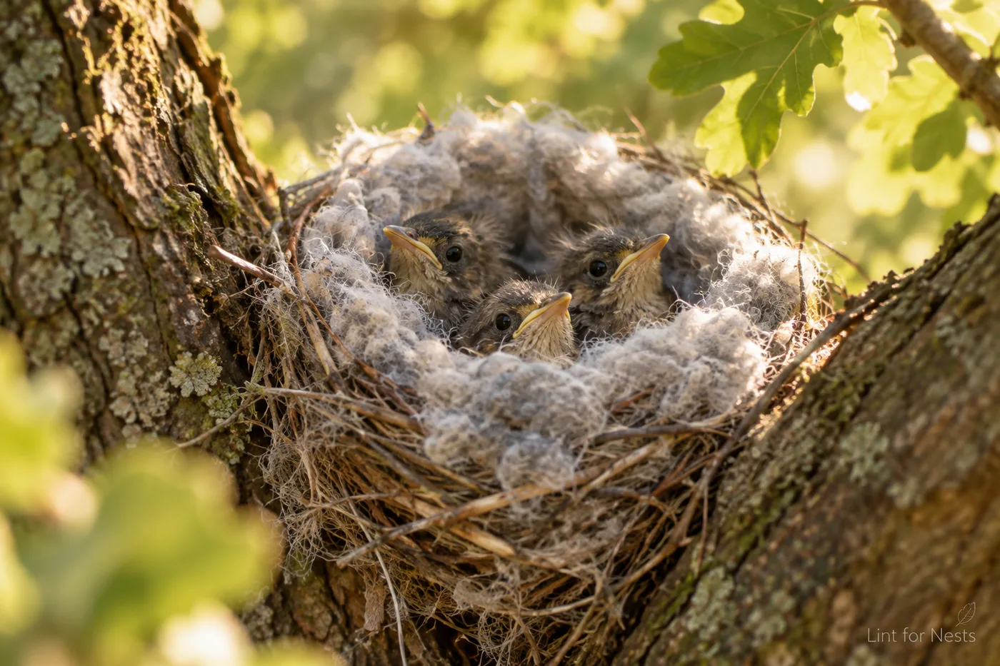
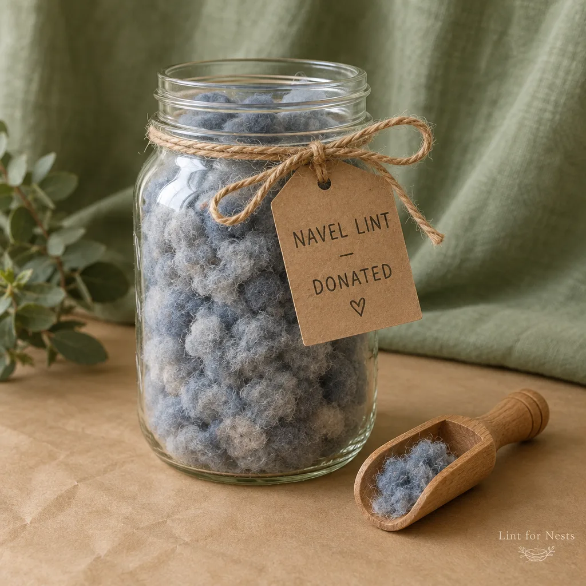

Your belly button lint can save a songbird.
Lint for Nests collects donated navel lint at drive-up Lint Drives across the Midwest. Our volunteers sort it, sanitize it, and use it to insulate nests for orphaned songbirds who would otherwise face the cold with nothing but twigs.

Insulated nest #1,204. Three chicks, zero drafts.
From your navel to their nest, in three steps
You collect
Check your navel at the end of each day, especially in sweater season. Store your findings in any clean jar. A season of honest collecting fills more of a jar than most first-timers expect.
We sort and sanitize
Trained volunteers grade every donation by loft, color, and staple length, then run it through a triple-wash sanitation cycle. Nothing touches a nest until it passes inspection.
A bird gets warm
Certified Nest Technicians line the nests of orphaned songbirds with graded lint. It holds warmth better than almost anything a bird can find on its own. That is not an accident. It came from a person.
41 pounds recovered. 60 to go before the frost.
Every pound of donated lint insulates roughly 27 nests. When the thermometer fills, we winterize every rescue nest in our three-state service area. When it does not, some warblers wait. We prefer the first outcome.

What a difference a navel makes


Join the flock of sustaining donors
Monthly giving keeps our sanitation line running between drives. Every tier includes our newsletter, The Navel Gazette.
Lint Friend
- The Navel Gazette, monthly
- Your name in the annual report
- The knowledge that a bird is warm
Nest Builder
- Everything in Lint Friend
- Official window decal
- Quarterly photos of insulated nests
Warbler Guardian
- Everything in Nest Builder
- A wild warbler named after you
- Personalized naming certificate
Golden Navel Circle
- Our most distinguished society
- Invitation to the annual Sorting Gala
- Discreet handling, always